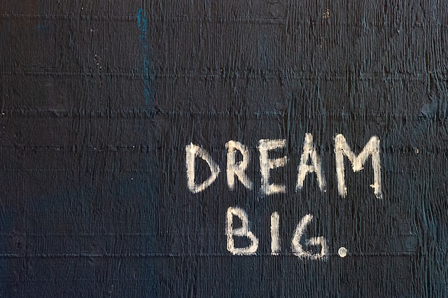

I’m very excited to have joined the Central User-Centred Design team at NHS Digital, working with Rochelle, Tero, Eva and the Central Re-Ops team.
It’s a new role for me working as a UCD Lead; the role is all about facilitating change, improving UCD-maturity, sharing UCD knowledge, scaling-up UCD best practice across our NHS teams.
UCD Maturity
It’s a big responsibility to take on this important project launched by Rochelle, and the UCD Maturity community.
Last week we relaunched the UCD Maturity Model & Community of practice, great to see many teams still keen and engaged with this work after nearly 18 months!
This is the place to be and a great space for colleagues who are interested in organising and facilitating UCD Maturity reviews, as well as coaching and supporting teams beyond their reviews.
This project is also a bit of a can of worms too – so how many teams might need a review, and possibly, quite a lot of follow-up help too.
How might we provide UCD-maturity reviews, coaching and guidance at scale?
As the Central UCD Team we want to deliver exemplar quality work, to enable and inspire other teams, rather than commit to speaking to every team right away and rushing through lots of reviews.
Teams are already booking in their reviews for August/September, if your team need UCD-support or would like a UCD Maturity review do reach out to myself about this (before we are fully booked)!
I’ve joined the cross-departmental UCD Maturity working group which looks to be a very useful collaboration space too.
We’re also collaborating across the Product Directorate and with the Public Digital team on the alignment of Product-Engineering-UCD review strategies.
Other areas of work I’m prioritising for the next 6 months include the Knowledge-Management strategy (Guidance/toolkits, policy) and UCD-Ops strategy (resources, tools, labs, etc).